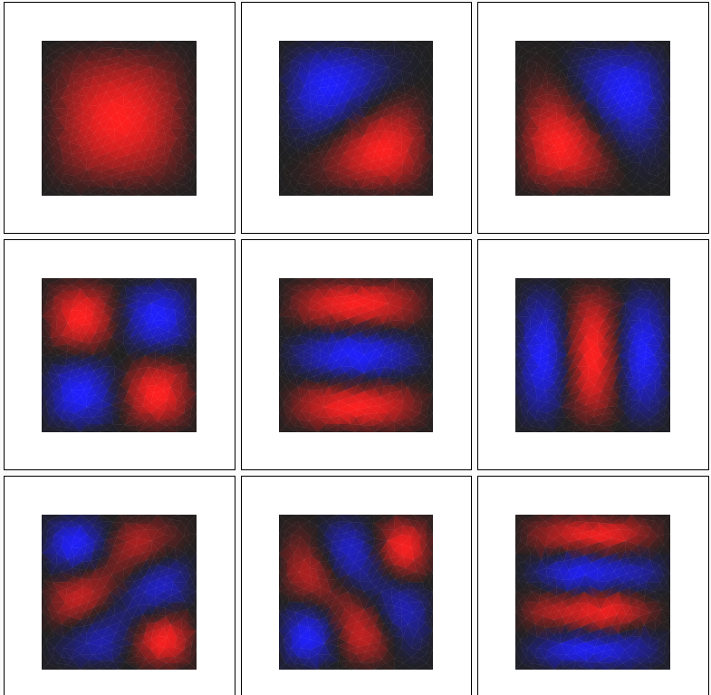

“Estimation of the volume of Voronoi cells in high dimension and control variables in Monte Carlo rendering”
- Exploration of stochastic techniques in estimating the volume and barycenters of Voronoi cells in high dimension
- Improvement of Monte Carlo integration by control variate techniques, new control variate proposed
- Caracterization and proofs of domination of the new control variate over the original control variate
 Supervised by David Coeurjolly and Vincent Nivoliers
Supervised by David Coeurjolly and Vincent Nivoliers
Image Segmentation : Region Growing and Split and Merge Algorithms
- Region Growing : use of more various metric (Wasserstein distance between histograms, Mahalanobis distance, Lp norms) to compare regions
- Efficient Split and Merge implementation using a quadtree structure and binary encoding to compute neighborhoods
Edge Detection : Hough Transform and improvements
- Implementation of the Active Contour Method for image segmentation
- Implementation of the Hough Transform for line detection
- New line detection algorithm based on DBScan in pixel-gradient space
Cloth simulation : Mass Spring system & XPBD
- Implementation of Mass Spring System
- Implementation of XPBD
- Spatial Hasing for fast collision detection
Internship : Use of Normal information to improve differential operators on polygonal meshes
- Various Spline based approaches to provides better estimates of non-linear edges in order improve the convergence of discretizations of differential operators based on Fernando De Goes et al. (No conclusive results)
 Supervised by David Coeurjolly
Supervised by David Coeurjolly
Ambiant Occlusion & Diffusion Limited Aggregation
- Quasi Monte Carlo techniques for Ambiant Occlusion on heightfields
- Improvement of DLA algorithm by simulation brownian motion through a Walk-On-Sphere way and Octree for closest point search

Curves & Clouds - A scientific visualization and computing library
A lot a different topics are covered :
- standard scientific visualization (1D and 2D plots, points clouds, etc…)
- ODE solvers
- Dense and Sparse Linear Algebra solvers
- ML algorithms (Kmeans, PCA, etc…)
- FEM solvers
- Quadtree and Delauney Meshing
- Semi discrete Optimal Transport
- Symbolic Differentiation -> Geodesic equation solver (used for raytracing around black holes)
- etc…



Stable Fluids implementation
Standard Stable Fluids implementation :
- Diffusion
- Semi-Lagrangian advection
- Projection method with prefactored sparse laplacian matrix for poisson problem $$\Delta u = \nabla \cdot v$$
- etc…
BSPOT
Computes very fast (in quasilinear time) an assignation that is a good approximation of the optimal one. (Sadly, it has already been published) It works really well when the optimality is not as important as speed such as color in transfer.